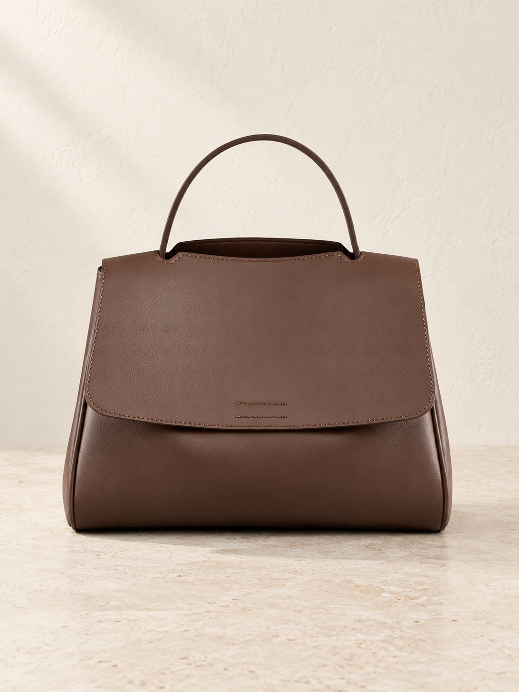

Excluded from upload
Distinct Brown variants reuse the same source photograph; their branding/design difference is unresolved.

Brown Viney
Compare with the original photo
Check the silhouette, color, grain, stitching, strap attachments and hardware against the source before approval.

Rowan flap bag
$109.00 USD
Retail price · reviewed under your delegated approval
A broad flap and a quiet rectangular shape define Rowan. Its softly structured exterior is balanced by stitched details, while internal compartments and pockets help organize the things you carry.
- Flap-front rectangular silhouette
- Top handle and longer carry strap shown in source photos
- Internal zippered and card pockets
Materials
Split cowhide and synthetic leather, with polyester lining.
3 new product photos · source data and CJ references preserved.
Review notes
- Brown public version shares the supplier image used by another brown variant. Confirm design/branding difference before merging, relabeling or publishing these variants.
- Keep Brown Viney and Black Viney source labels and references; do not silently remove a possible brand/design distinction.
- Care instructions, product dimensions still require confirmation. No unverified values have been inserted.
- Generated photos remain candidates. Compare each with its source before approving it.
Variants, supplier costs and proposed retail prices
All amounts below are USD. Supplier costs exclude shipping and other business costs; proposed retail prices are not approved.
| Original variant | CJ SKU | Supplier cost | Proposed retail |
|---|---|---|---|
| Brown Viney | CJNS275212901AZ | $24.71 | $109.00 |
| Black Viney | CJNS275212902BY | $24.71 | $109.00 |
| Brown public version | CJNS275212903CX | $24.71 | $109.00 |
SEO and product organization
SEO title: Rowan flap bag | Atelier Veyne
Meta description: Rowan flap bag. Flap-front rectangular silhouette. Top handle and longer carry strap shown in source photos. Discover considered everyday bags at Atelier Veyne.
Proposed collection: Crossbody bags
Tags: crossbody-bag, cj-import, brown-viney, black-viney, brown-public-version
Live Shopify IDs, swatches, duplicate checks and fulfillment links are still unverified.